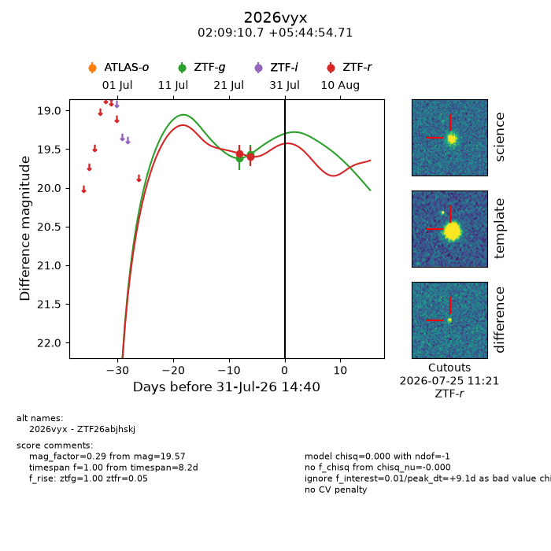
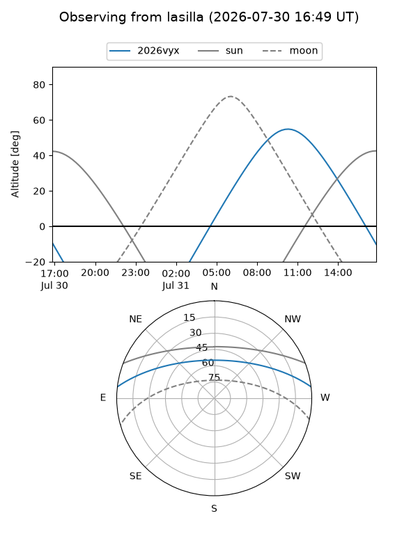
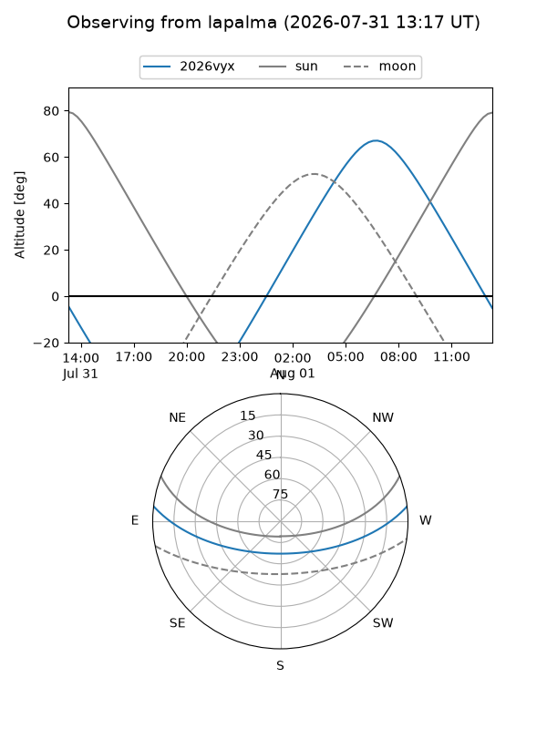
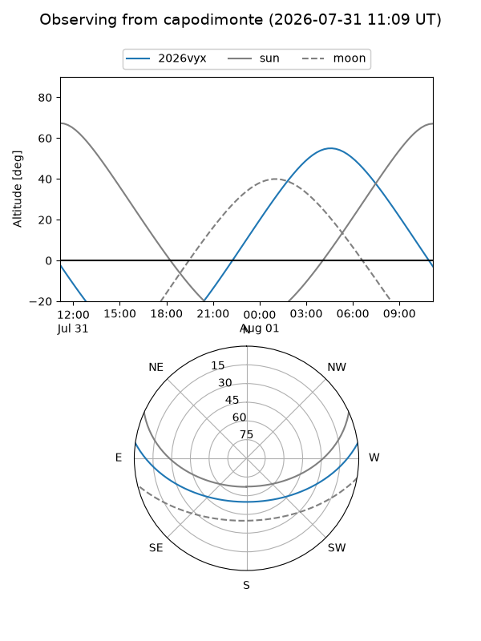
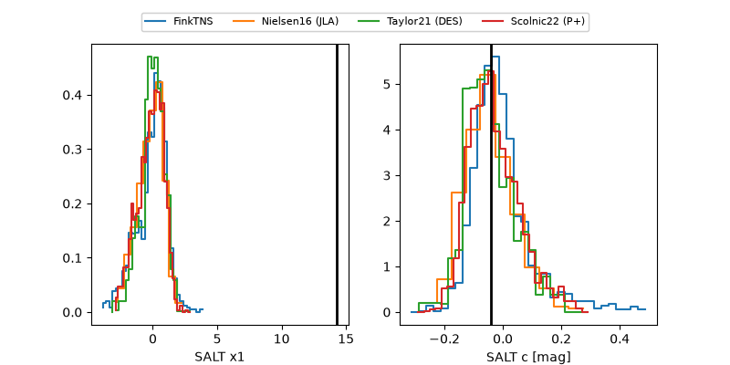

2026vyx
Target 2026vyx at 2026-07-31 14:43
Aliases and brokers:
FINK-ZTF: ztf.fink-portal.org/ZTF26abjhskj
Lasair-ZTF: lasair-ztf.lsst.ac.uk/objects/ZTF26abjhskj
ALeRCE-ZTF: alerce.online/object/ZTF26abjhskj
YSE-PZ: ziggy.ucolick.org/yse/transient_detail/2026vyx
TNS name: wis-tns.org/object/2026vyx
Direct TNS query: direct search
alt names
ZTF26abjhskj (ztf,fink_ztf)
2026vyx (tns,yse)
Coordinates:
equatorial (ra, dec) = 32.2944,+5.74853
equatorial (HMS+DMS) = 02:09:10.66,+05:44:54.71
galactic (l, b) = (155.5664,-52.12793)
Flags:
TNS type: nan
peak dt: +9.1
Photometry:
last ztfg=19.57, ztfr=19.59
2 ztfg, 2 ztfr detections
Lightcurve

Visibility



Additional plots
